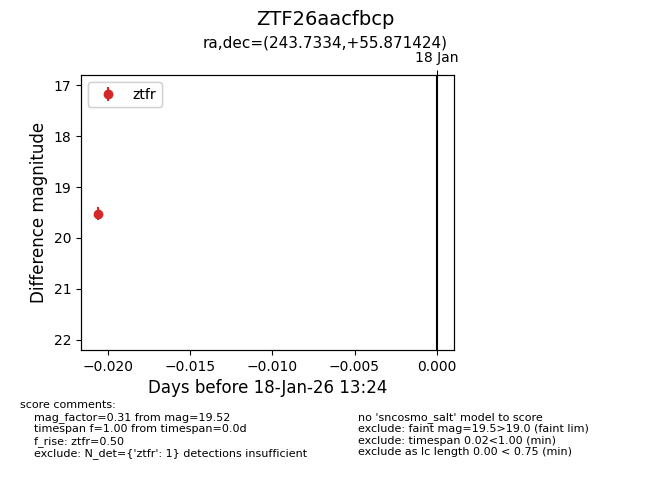
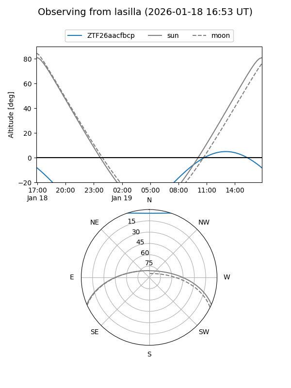
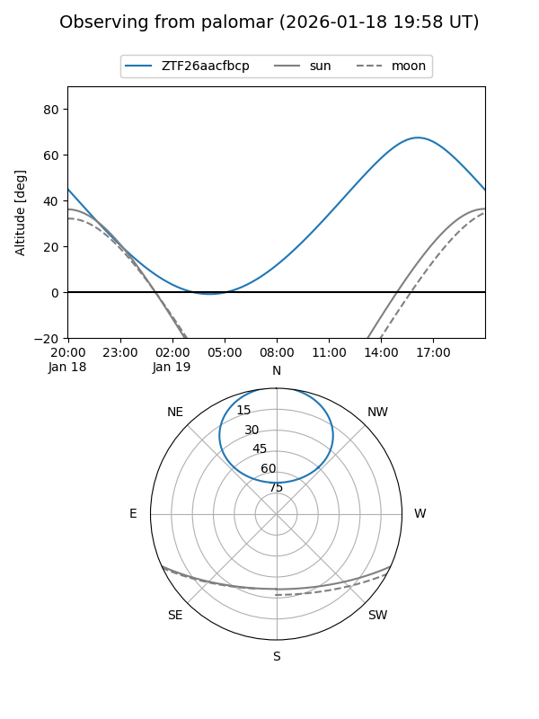

ZTF26aacfbcp
Target ZTF26aacfbcp at 2026-01-18 13:25
Aliases and brokers:
FINK: link
Lasair: link
ALeRCE: link
alt names
ZTF26aacfbcp (ztf,fink_ztf)
Coordinates:
equatorial (ra, dec) = 243.7334,+55.87142
equatorial (HMS+DMS) = 16:14:56.03,+55:52:17.13
galactic (l, b) = (85.8217,+43.83196)
Flags:
Photometry:
last ztfr=19.52
1 ztfr detections
Lightcurve

Visibility


Additional plots